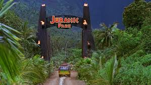

Durata: 127 min
Genere: avventura, fantascienza, azione, triller
Anno di uscita: 1993
Regista: Steven Spielberg
La trama.
Su Isla Nublar, una piccola isola di proprietà della InGen situata a 120 miglia a nord-ovest della Costa Rica, un operaio viene assalito e ucciso da una feroce creatura, custodita in una gabbia che la vittima stava spostando insieme ai colleghi. La famiglia dell'uomo fa causa al proprietario della InGen, John Hammond, un simpatico ed eccentrico miliardario con la passione per i dinosauri.
Il paleontologo Alan Grant e la paleobotanica Ellie Sattler vengono contattati da Hammond in persona, che li invita a visitare la sua isola per formulare una valutazione scientifica relativa alla realizzazione di un suo progetto, su cui però mantiene inizialmente il più assoluto riserbo. Si scopre che Hammond è riuscito, grazie alla tecnica della clonazione, a mettere in vita molti dinosauri e ad impiegarli per realizzare un vero e proprio parco dei divertimenti a Isla Nublar. Lo scopo della visita è quello di ottenere dai due scienziati una relazione positiva sul parco e poter così tranquillizzare i finanziatori. Nel frattempo, Dennis Nedry, il responsabile dei sistemi informatici di Isla Nublar, viene corrotto per 1,5 milioni di dollari da Lewis Dodgson, dirigente di una società concorrente alla InGen, che vuole entrare in possesso degli embrioni delle quindici specie di dinosauri del parco.
Una replica della Ford Explorer vista nel film.
La coppia di scienziati giunge sul posto insieme all'avvocato Donald Gennaro e all'eccentrico Ian Malcolm, matematico texano specializzato nella teoria del caos, scoprendo così l'opera di Hammond e il modo in cui egli sia riuscito a realizzarla grazie all'aiuto del dottor Henry Wu, ovvero sfruttando il sangue di dinosauro estratto da delle zanzare vissute nel Giurassico e rimaste poi imprigionate nell'ambra fossile. Siccome il DNA dei rettili estratto non era completo, è stato completato con quello di un rospo. Per motivi di sicurezza, i dinosauri sono tenuti all'interno di 50 miglia di recinti elettrificati, sono tutti di sesso femminile per impedirne la riproduzione incontrollata e sono tutti carenti di una particolare proteina, la lisina, la cui mancata assunzione causerebbe la morte dell'animale nell'arco di una settimana.
Nonostante l'apparente impeccabilità dei sistemi di prevenzione messi in atto, Alan ed Ellie, seppur sbalorditi, nutrono comunque dei seri dubbi sul possibile impatto ecologico che i dinosauri potrebbero provocare. Malcolm è ancora più scettico, quasi oltraggiato da ciò che è stato fatto: secondo lui non è possibile regolare lo sviluppo di un ecosistema, e non perché i sistemi di sicurezza siano inefficienti, ma perché "la vita vince sempre" e si ribella al controllo dell'uomo. Successivamente i due nipotini di Hammond, Timothy "Tim" e Alexis "Lex" Murphy, raggiungono il centro visitatori e si uniscono al gruppo; gli ospiti vengono quindi invitati a un safari nel parco, nella speranza che assistere alle sue meraviglie convinca questi ultimi ad appoggiare il progetto. Purtroppo la visita viene sospesa a causa di una tempesta in arrivo.
Nel frattempo Dennis Nedry, per poter agire indisturbato nel rubare gli embrioni, disattiva il sistema di sicurezza del parco; ciò, oltre a mettere fuori uso i telefoni e il blocco-porte, provoca la fuoriuscita dei dinosauri dai recinti non più elettrificati, a esclusione di quello dei tre Velociraptor, predatori particolarmente intelligenti. Di conseguenza gli ospiti rimangono bloccati davanti al recinto del Tyrannosaurus rex e assistono alla distruzione della recinzione da parte della bestia, che subito, dopo aver divorato una capra usata come esca per attirare il gigantesco predatore, li attacca, cominciando a ribaltare la macchina dei bambini. Malcolm resta gravemente ferito e Gennaro viene divorato dal carnivoro. Grant trae in salvo Tim e Lex e scampa al dinosauro, sperdendosi nel parco e nascondendosi in cima ad un grosso albero. Nedry, entrato in possesso degli embrioni e diretto verso il battello, esce di strada con la macchina, e nel tentativo di riportare la vettura sull'asfalto viene attaccato e divorato da un Dilophosaurus. Malcolm, in fin di vita, viene soccorso più tardi da Ellie e Muldoon (guardiacaccia e capo della sicurezza del parco). Durante il loro ritorno alla base operativa vengono sorpresi dal T. Rex, ma riescono a sfuggirgli a bordo della jeep.

Il giorno dopo, Grant e i due bambini, dispersi nel parco, scoprono un nido pieno di uova schiuse, segno che i dinosauri si stanno riproducendo liberamente. Il paleontologo ipotizza che ciò sia conseguenza del fatto che il loro DNA sia stato riparato unendolo a quello di un rospo africano, animale che può cambiare sesso quando si trova in branchi monosessuali. Ciò dimostra che Malcolm aveva ragione: la vita vince sempre. Anche Ellie, nel frattempo, fa capire ad Hammond come l'intera idea di un parco con i dinosauri fosse solo una grande illusione, perché per renderla reale sarebbe stato necessario un controllo che le recenti tragedie hanno dimostrato non essere mai esistito. Hammond allora, resosi conto del pericolo, propone di riavviare il sistema informatico dopo averlo arrestato totalmente.
L'idea ha successo, ma ora è necessario recarsi nel vicino impianto con il generatore per riavviare manualmente la corrente. Arnold, l'ingegnere capo del parco, si reca a ripristinare il sistema ignaro del fatto che l'arresto totale ha permesso la fuga anche ai velociraptor. Non vedendolo più tornare, Ellie e Muldoon decidono di andare a cercarlo: appena usciti notano che il recinto dei raptor è stato distrutto da questi ultimi ed intuiscono che Ray Arnold è stato divorato. Muldoon affronta due dei predatori per dare modo alla dottoressa di accedere alla struttura, venendo anche lui divorato, ma la Sattler riesce a reinserire la corrente, intrappolando momentaneamente un terzo raptor nell'edificio; ora occorre solo riavviare le comunicazioni.
Nel frattempo Grant, dopo un lungo e avventuroso viaggio, raggiunge il centro visitatori: qui lascia Lex e Tim da soli nella sala principale ed esce a cercare Ellie. Due velociraptor, una delle quali è la capobranco, si introducono nell'edificio per braccare i bambini, i quali riescono a sfuggire ai predatori, scappando nella cucina e rinchiudendone uno nella cella frigorifera. Alan e Ellie raggiungono i bambini e, dopo aver riattivato i rimanenti sistemi operativi del parco, vengono assaliti ed accerchiati dai due velociraptor restanti. Quando ormai per loro sembra finita, il T. Rex attacca a sorpresa i due predatori e li uccide, permettendo al gruppo di salvarsi. Chiamata la terraferma, Hammond, Malcolm, Ellie, Alan e i bambini vengono tratti in salvo dall'elicottero che si allontana.